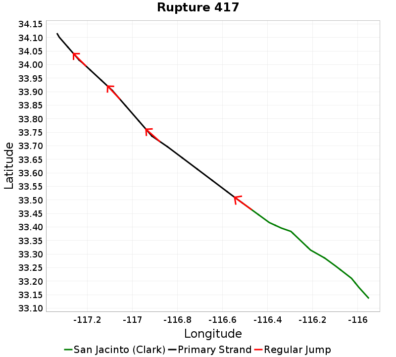
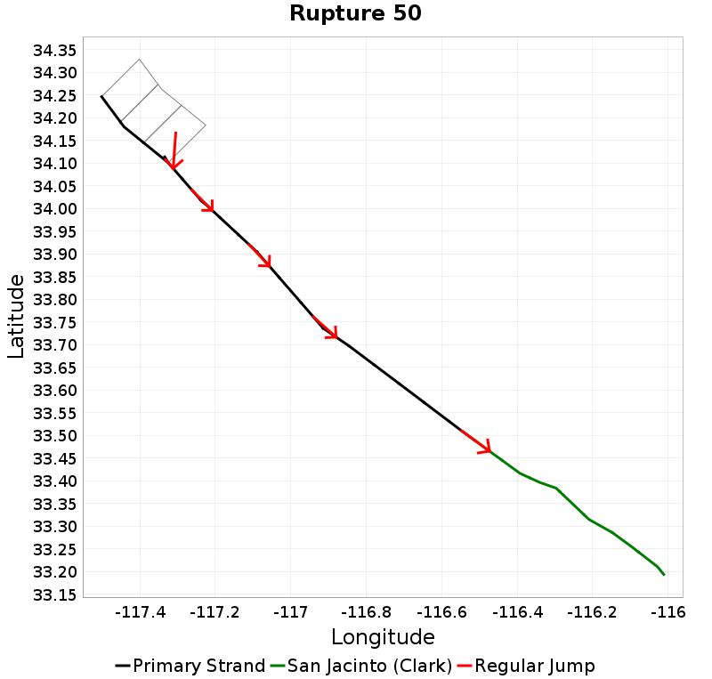

San Jacinto (Clark) Details
| Property | Value |
|---|---|
| Rupture Count | 133 |
| Magnitude Range | [6.51, 7.74] |
| Length Range | [16, 192] km |
| Total Rate | 0.0071383286 /yr |
| Multi-Fault Rate | 0.002511045 /yr (35.18%) |
| Directly-Connected Faults | 1 |
| All Co-Rupturing Faults | 5 |
Table Of Contents
- Magnitude-Frequency Distribution
- Along-Strike Values
- Scalar Histograms & Example Ruptures
- Connectivity
Magnitude-Frequency Distribution
| Incremental | Cumulative |
|---|---|
Along-Strike Values
Scalar Histograms & Example Ruptures
Rupture Magnitude

| Minimum: 6.51 | p50: 7.45 | p90: 7.68 | p95: 7.7 |
|---|---|---|---|
|  |  | ||
| p97.5: 7.72 | p99: 7.73 | p99.9: 7.74 | Maximum: 7.74 |
 | |
Rupture Length

| Minimum: 16.44 | p50: 103.74 | p90: 167.98 | p95: 176.34 |
|---|---|---|---|
 |  | ||
| p97.5: 184.03 | p99: 190.23 | p99.9: 192.25 | Maximum: 192.25 |
|  | | |
Cumulative Jump Dist
| Minimum: 0.0 | p50: 2.8292956E-12 | p90: 0.12 | p95: 0.12 |
|---|---|---|---|
 |  | ||
| p97.5: 0.12 | p99: 0.12 | p99.9: 0.12 | Maximum: 0.12 |
 | | |
Connectivity
 |
|---|
Nearby Sections
| Fault Section |
|---|
| San Jacinto (Anza), 0 km away |
| San Jacinto (Coyote Creek), 3.52 km away |
San Jacinto (Anza), 0 km away
| slip_rate_inferred_gr_solution | |
|---|---|
| Connected? | true |
| Directly Connected? | true |
| Co-rupture Count | 105 |
| Co-rupture Rate | 0.002511045 |
San Jacinto (Coyote Creek), 3.52 km away
| slip_rate_inferred_gr_solution | |
|---|---|
| Connected? | false |
| Directly Connected? | false |
| Co-rupture Count | 0 |
| Co-rupture Rate | N/A |